Previous: Hardcourt Confidential Excerpt | 🏠 Famous Coaches Home | Next: Point of Contact
How you can play better doubles in tennis
Comprehensive unified tennis knowledge base — Fundamentals, Stroke Analysis, Reference Library, and more
HYPERLINK "https://sportstar.thehindu.com/columns/vantagepoint-paul-fein/tennis-doubles-bob-bryan-mike-bryan-david-macpherson-serve-and-volley-strategy-interview/article29811117.ece" sportstar.thehindu.com
How you can play better doubles in tennis
David Macpherson
Interviewed by Paul Fein
“A good doubles match can be one of the fastest and most exciting of all sports events.” – John Newcombe, in World Tennis magazine (1977).
“You need to be a more capable tennis player to be great at doubles.” – Martina Navratilova, in Tennis magazine (2004).
Unless you love doubles and follow all-time greats Bob and Mike Bryan, you may not have heard of David Macpherson. This upbeat Australian deserves far more recognition. Since 2005, he’s guided the famous Bryan twins to 15 of their 16 Grand Slam titles, an Olympic gold medal, 39 Masters crowns and 10 year-end world No. 1 rankings.
In 2014, Macpherson coached Switzerland’s Roger Federer and Stanislas Wawrinka to the Davis Cup title and was named Coach of the Year by World TeamTennis.
Before becoming one of the most respected pro coaches, the 52-year-old Macpherson reached a career-high ATP doubles team ranking of No. 8 with Steve DeVries. He also won 16 ATP doubles titles, including the 1992 Masters Series Indian Wells.
Macpherson, affectionately nicknamed “Macca,” credits great chemistry for his extraordinary success with the Bryans. “We’re great friends,” he told the ATP. “I love coaching, and they love playing.”
The feelings are shared. In a sport where coaching stints often last only months or even weeks, the Bryans have relished their close friendship with Macpherson for 15 years.
“Macca understands us perfectly,” Mike Bryan told me. “He knows how badly we want to win, and he matches our intensity and professionalism each and every day. He is amazingly dedicated to his job, and he always outworks the opposition. We love the fact that despite the wins and titles, he makes sure we keep pushing the bar higher and higher. It’s a shared philosophy of never being satisfied.
“Macca is like a second father to us,” said Mike, whose parents, Wayne and Kathy, a former world-class player, got them started in tennis. “He knows how to balance our delicate interpersonal twin dynamic. He understands when it’s the right time to come in between us, but he’ll never takes sides. When we take to court for matches, he always makes sure we’re on the same page, and our energy is together moving positively in the right direction.
“There’s also nobody I’ve ever met who has more resiliency when it comes to weathering a storm of tough results. His unwavering optimism keeps the morale of our team high and allows us to bounce back stronger.”
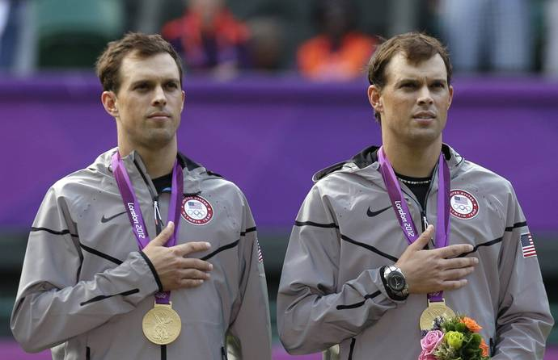
Mike (left) and Bob Bryan during the medal ceremony of the men's doubles at the 2012 Olympics. - AP
The greatest doubles team in men’s tennis history appreciates Macpherson’s astute coaching mind as much as his genial personality and psychological savvy.
“Macca played against us on tour and thus was able to bring an opponent’s perspective to our coaching camp,” Bob Bryan told me. “He knew our strengths but more importantly could communicate to us areas of our games that he viewed as weaknesses and needed improvement.
“Macca is not nearly as physically powerful as us, but he was an amazing poacher, used unconventional formations, crafty volleys and detailed game plans to succeed on tour,” Bob recalled. “He brought us all this knowledge, and we have used it to help us achieve our goals.
“No one is more positive, hard-working or loyal as Macca. He is a doubles genius, has our utmost respect and will be a lifelong friend.”
In this wide-ranging interview, Macpherson shares his vast expertise about the basics and fine points of doubles.
As a teenager, you learned the game at Tony Roche’s junior tennis academy in Australia, a tennis-loving country renowned for producing champions, especially in doubles. Which fundamentals of doubles technique and tactics do you remember most from that training? And which fundamentals have you tried to inculcate most as a coach?
The great thing about being coached by Tony is that we learned to volley. There was such an era [in the 1960s and 1970s] of great volleyers that we volleyed so much as kids, way more than the kids of today do in any of the other countries. We did a lot of volleying, reflex volleying, smashing and just playing the net in general. Because in Rochie’s day there was a lot of grass-court tennis and getting to the net was at a premium. Fellows didn’t have the powerful backhands they do now.
Tony was my favourite volleyer of all time. So to be coached by him inspired me and helped me to teach volleying going forward. Tony taught me many other things as well. My doubles education started with the incredible amount of volleying we did. Tony was one of the best volleyers, perhaps the best, of all time.
How is coaching a doubles team different from coaching a player who focuses on singles?
Singles is a very lonely sport. So, as a coach, you feel an even greater onus to prepare your singles player for every eventuality. Because once they get out there on the court, they have to think for themselves. That’s why you see a lot of singles players looking up at their [Player’s] Box — sometimes in agitation or bewilderment when things are not going well.
Whereas in doubles, for example, you prepare Bob and Mike, and if things aren’t going well, they can communicate with each other out there. Mike might say to Bob, “We worked on this, we talked about that, and Macca said, ‘Go down the line’ or whatever.” It’s helpful for a coach to know that they have that on-court communication and support.
When I coach John [Isner] in singles, he’s out there on an island. He has to remember everything and execute everything that we talked about beforehand without anyone else’s help. You prepare your singles player because he has no one to talk to during the match.
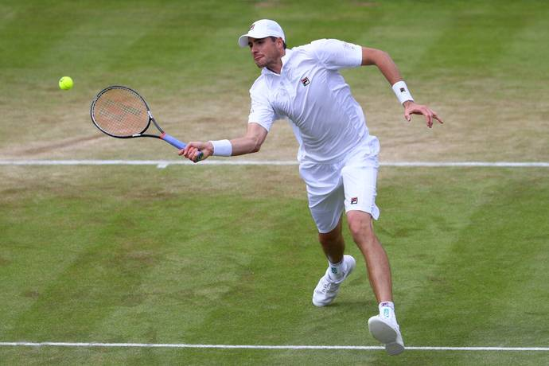
John Isner adopted a serve-and-volley first approach to his grass-court strategy and came very close to reaching the final at Wimbledon 2018. - Getty Images
What have been the biggest changes in how doubles has been played on the ATP and WTA tours since 1985 when you turned pro?
Two things. First of all, there is now a lot more poaching by the net player when his partner serves. From the normal formation, the Bryan brothers took that to a whole new level. Certainly with [John] Newcombe and Roche [in the 1960s and ’70s] and the Woodies [Todd Woodbridge and Mark Woodforde in the 1990s], those two great Australian teams, or even [John] McEnroe and [Peter] Fleming [in the 1980s], weren’t anywhere near as active at net as Mike and Bob became. Then everyone copied the Bryans.
Even though the women don’t serve as big as the men, they’re doing a lot more poaching these days. They’re playing a much bolder game at the net to try to take more pressure off their partner serving.
The other big change in doubles is the “I” formation, which the Bryan brothers had to adjust to because some teams came along in the 1990s and brought in the “I” formation. That’s been a very effective tactic in men’s doubles since then because it’s not easy to return the ball into the alleys off big serves. So when you put your net player in the middle of the court [on your service games], it makes it difficult for the returner to hit the ball past the net player. That hasn’t been aesthetically great for doubles because the points in men’s doubles this decade have been a little too short. But it’s a very effective tactic in modern-day doubles.
Players taller than ever have accelerated both trends, with ATP players now averaging more than 6’2”. For example, Bob is 6’4”, Mike is 6’3”, and former No. 1 Marcelo Melo is 6’8”. Great height gives players the obvious advantage of serving very powerfully and from such a steep angle that the returner is often incapable of controlling their return well enough to avoid the net man who is camped on top of the net and in the middle of the court. Being tall also increases their range at the net, so it’s a deadly combination.
I read that Bob and Mike Bryan use 52 different doubles drills in their practice sessions? Which drills proved most beneficial for them over the years? And why?
We’ve done a lot of different drills over the years. Some they learned as kids from their parents. Some they learned along the way as they tried to fine tune what comes up in doubles points. Some of the things that separate the Bryan brothers from the other teams are the ground strokes. A lot of doubles teams practise reflex volleys, poaching, serving and returning serves. But the Bryans have very consistent, accurate ground strokes. They paid a lot of attention to that in their doubles drills.
Apart from playing singles points against each other, which keeps their ground strokes sharp, they also play the two net players against the two baseliners every day. The net players are positioned near the service line, and they feed the ball to the players at the baseline. Then it becomes a good battle between two advancing net players against two players positioned on the baseline.
The Bryans got so good at playing two back that often good players with good ground strokes keep both returners on the baseline, especially on first-serve returns. They feel that if they can get their return in play, then they have an excellent chance to win the point against two net players because they have such accurate ground strokes.
With this drill, the onus is on the baseline players not to hit the ball too high over the net and hit with enough pace so that the volleyers don’t win the point.
In another common drill, both players at net whack a ball as hard as they can at each other. The players work on their hands and their ability to defend their body in net duels. That helps them improve their hand-eye coordination and reflexes.
Which drills do you recommend for juniors? Recreational players?
Juniors and recreational players also need to do a lot of quick-volley drills. They also need to do drills to learn how to intercept balls, to poach. Here the net player has to imagine, to envision where the opponent’s ball is going and then cut across the middle to intercept it. The junior player and the recreational player sometimes lack the footwork, confidence and anticipation to cut across the court where the ball is going to be. That comes instinctively to the pros.
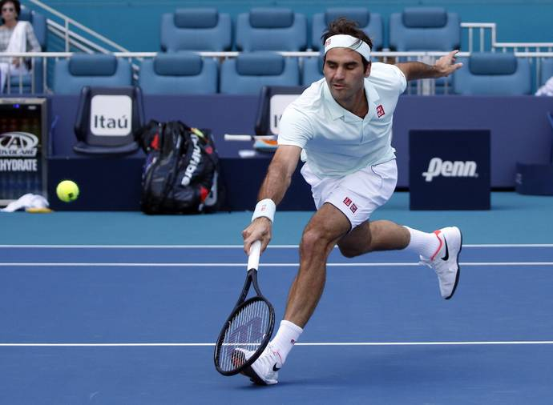
Roger Federer, along with Stefanos Tsitsipas, is one of the two best volleyers among the top 20 singles players. - AP
The Bryan brothers are always in motion during the point. Why is this so critical?
One of the hallmarks of their legacy is their energy. You never see them flat-footed. I always say to recreational players, “A tennis point lasts only 5-20 seconds, so if you can’t stay on your toes in constant motion for 20 seconds at a time, you should get out of the business.”
The Bryans are so energetic that they’re in motion even between points. During points, they’re in motion even if they’re not the one hitting the shot. They’re constantly moving their feet, trying to anticipate where the next ball is going to go. That is a big lesson for recreational players to learn because that constant movement enables them to get off to a quicker start.
“Playing doubles with somebody sets up a strange relationship, in which you are a friend, teammate and competitor,” wrote doubles superstar Martina Navratilova in her 1985 autobiography. What are the keys to making this “strange relationship” work well?
That’s a very astute comment from Martina. You and your partner in this battle form a friendship and a bond. But it’s also very stressful. It’s like being a part of any team. When you suffer adversity and defeat, it’s so easy to blame the other person. That’s why there is sort of a competition between doubles partners as well. You don’t want to be the one who caused the defeat. Sometimes it’s a battle to stay positive and not fall in that trap of blaming your partner for your defeats both during and after matches.
Part of being a great doubles player is getting the best out of your partner. That means helping them feel confident and good about themselves. So even if you’re playing with someone who is not playing well or is a weaker player, you have to work on the psychology part of the game so that you’re getting the best out of them and not diminishing their confidence. Martina was alluding to the competition between partners because it’s human nature. You want to feel like you’re the better player on the team.
What criteria should players use when they decide whether they should play on the deuce side or the ad side, both for a given team and for their career?
That’s a great question. It starts with the return. Which side of the court do I return most effectively from. Then, if you’re fairly comfortable returning both cross court and down the line on both sides, you think about the next shot. And you ask yourself which side of the court would I like to hit my most powerful and effective shot after the return.
Then you have to factor in poaching. Most players have more [movement] range and [shot] power on their forehand side. Bob and Mike feel their favourite return side is Bob on the deuce side and Mike on the ad side. But their decision is also based on poaching. Bob feels like if I put myself on the forehand court and Mike makes a good return, I have so much more confidence and range to attack the next ball with my forehand volley.
So, after you consider these three factors, you decide which side is best for you.
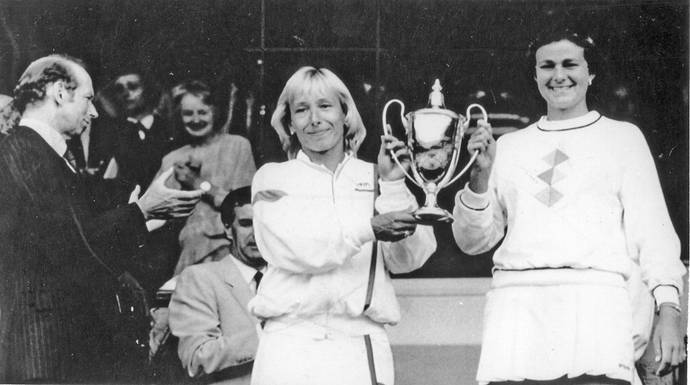
Martina had a nasty [lefty] serve, and Pam had a very good serve. They both had fantastic volleys. - The Hindu Photo Library
When aspiring doubles players watch the pros play either at tournaments or on TV, what should they look for to improve their own doubles games?
Junior players, USTA league players and recreational players can learn so much from watching the Tennis Channel’s and ESPN’s coverage of doubles and listening to the experts analyse it. One of the biggest things to be noticed and copied is the desperation from the server’s partner and, to a lesser degree, the returner’s partner to track, anticipate and hunt down the ball at the net. Amateur players are too often timid up there and take up too little space.
They don’t help their partner hold serve or take advantage of a good return of serve. The Bryans’ net man covers an enormous amount of space and hunts down the ball at net. That makes life easy for their partner both when he serves and returns serve.
Why is it smart to hit up the middle in doubles?
If you can keep the ball low and up the middle when two [opposing] players are at net, then it’s difficult for them to put the ball away. On the other hand, if you hit the ball too high over the net near the sidelines, it creates too much of a cross-court angle opportunity for the net team to put the volley away. Or, if you’re the net team and you volley the ball up the middle, it also limits the amount of angle that your opponents can use to get the ball by you.
Also, by hitting up the middle against a team that is not particularly cohesive, sometimes both players let the ball go by. They think the ball should have been their partner’s shot. That shouldn’t happen at the highest level, but in recreational tennis you see that a lot. Recreational players also can collide going for the ball up the middle. Another reason is that the ball goes over the lowest part of the net. So hitting up the middle is often the highest percentage shot.
How does volleying differ in doubles from singles in terms of technique and tactics?
The biggest difference is that in doubles you don’t need to have as good technique as in singles, because in doubles you get to position yourself so close to the net, especially in the men’s game where serving is powerful. You can get on top of the net, and, basically, without good technique at all, still put away volleys if your reflexes are quick enough to deflect the ball away for a winner.
In singles, you don’t get to start up at net. You have to work your way forward to the net. So often, as a singles player, you will have to play your first volley around the service line [which is 21ft from the net]. It is much more difficult to volley from the service line than from very close to the net.
When you serve and volley in doubles, there will be plenty of first volleys you have to hit from, or just inside, the service line as well. But there are also plenty of volleys in doubles where the server’s partner is standing on top of the net. So it takes more volleying skill to be effective in singles than in doubles.
In singles, there is a lot more court to cover than in doubles, and if you come in on a poor approach shots, you have little chance to win the point. Whereas in doubles, you can play the angles and it requires two players at net a lot of the time, so you should be in a good position to hit a solid volley.
In singles, you have to come to net at the right time, and you also have to be athletic and anticipate well like [Patrick] Rafter and [Stefan] Edberg to cover the net. In doubles, quick reflexes are paramount because sometimes the ball comes at you super quick. The best doubles players often have the best reflexes of all the players because they’re so used to it.
Would you say that it’s still important to have excellent technique?
Yes. But there are quite a few players on the ATP Tour that do not have good volleying technique at all. And their flawed technique is exposed at times when they’re required to play volleys from deeper positions. But they minimize that. When they serve in doubles, sometimes they don’t even serve and volley. They stay back and just use their ground strokes. And when they are the partner of the server, they get so close to the net that even though they don’t have good volleying technique, they don’t need it to put away a volley.
Which pros have the best volleying technique?
The Bryan brothers are the benchmark. They hit their forehand volleys so firm and flat, which a lot of players don’t do. A lot of players slice their volleys too much. Their racket head starts too steep [high] above the ball, and they end up with over-sliced volleys, which lack power and penetration. These volleys pop up too high. The Bryans have the most classic forehand volleys. They have a little more slice [underspin] on their backhand volleys, which is normal. But they have the ability to flatten out their backhand volleys and get that penetration when they need to, as did the great Australians like Roche, [Ken] Rosewall and [Fred] Stolle.
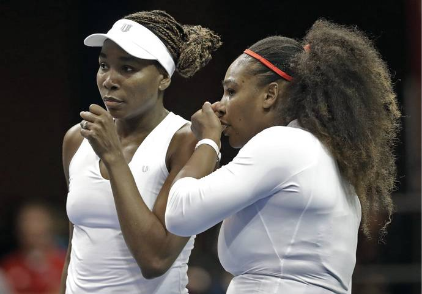
It would be fascinating if we had a time machine that had Martina Navratilova and Pam Shriver play Venus and Serena Williams. - AP
Besides Bob and Mike, which players today have excellent volleys?
[Roger] Federer and [Stefanos] Tsitsipas are the two best volleyers among the top 20 singles players. Tsitsipas is fantastic. He plays good doubles as well as singles because he really wants [to intercept] the ball at net. He has the ability to “stick” his volleys when it’s required or hit angles and touch volleys. Federer is often a brilliant volleyer. I’ll never forget that [2014] Davis Cup final when he put on a doubles clinic against the French team.
His volleys were immaculate and spectacular that day. John [Isner] proved at Wimbledon last year he is becoming an elite volleyer. He adopted a serve-and-volley first approach to his grass-court strategy and came very close to reaching the final. [Grigor] Dimitrov is also an excellent volleyer.
The one-handed players, like Federer, Tsitsipas and Dimitrov — and Navratilova and [Justine] Henin, among the women — are often very good volleyers. Volleying is more challenging for the two-handed players, who do things primarily with their second hand, to be as instinctive and skilful with the backhand volley.
Among the doubles standouts, [Pierre-Hugues] Herbert has very good volleying technique. He also has the ability to “stick” a volley.
In general, though, today’s players don’t volley as well as the generation that taught me, but they do the other parts of the game infinitely better. They hit the ball with so much more ferocious power. And their defensive speed — the way they move around the court — is at another level compared to when I was growing up.
What are the keys to poaching effectively? Put differently, when are the right times for a net player to take a chance and dart to the middle of the court?
It’s mostly about anticipation and visualisation and then decisiveness. You have to anticipate before your opponent has hit the shot where he’s going to hit the ball based on his shot tendencies and watching his racket face and trying to visualise where he’s hitting the ball. So a great poacher anticipates it before it even happens and is in motion as the ball is coming off his opponent’s strings. That’s why the Bryans look so quick. They are quick, but they’re also moving just before the ball has been struck. So that gets them into a position where they visualise and imagine where the ball is going to cross the net. They don’t wait for it to come off the strings and then try and go get it.
Sometimes you can be mistaken. You can be sure the opponent is going to hit the ball cross court, and you move toward the middle, but they fool you and hit the ball down the line and get a winner. That’s all part of the anticipation and guessing game that goes on during a doubles match. Poaching is the area recreational players really struggle with: visualisation and the ability to trust their moving as the opponent’s ball is struck.
You really should be poaching as much as possible because the player at the net can end the point quickly if they can get their racket on the ball. Whereas it’s harder for the person on the baseline to end the point. The best the server or returner standing on the baseline can do is hit an occasional winner. If you’re the player at the net, you should be desperate to volley whenever possible. That’s the attitude you should have.
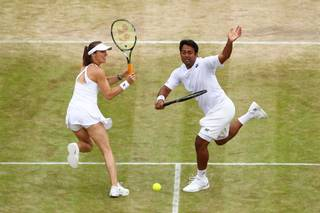
Martina Hingis was a great example of someone with the ultimate shot variety. She could return the ball anywhere. - Getty Images
Serving and volleying has almost disappeared in women’s doubles on the WTA Tour. Why? Do you teach girls and young women how to serve and volley?
Because the women don’t serve as big as the men, the advantage is with the returner a little bit in both singles and doubles. In general, because women’s serves lack the same spin and pace as the men, their first volley is so much more challenging. The ball coming to them is lower and more accurate on the WTA Tour than the ATP Tour, where the serves are so much bigger and the returns are harder to control.
So most of the great women’s teams don’t serve and volley. They hit the best serve they can, and the server stays on the baseline, and the net player does her best to anticipate and poach and pick off balls for their server. Meanwhile, the server stays back and tries to be consistent and outthink and outmanoeuvre the other team.
I agree with this tactic. Unless you are an extraordinarily good server or a particularly gifted volleyer from mid-court, then it’s better to serve and stay back in women’s doubles.
I miss the superb serving and volleying of 1980s doubles greats Martina Navratilova and Pam Shriver.
Yeah, Martina had a nasty [lefty] serve, and Pam had a very good serve. They both had fantastic volleys. They played in an era when no one hit the ball particularly hard. So serve-volleying for them was a high-percentage play. But these days the serve return is struck with such force that unless you’re serving with enough force to disrupt that return power, you really have to be an exceptional volleyer, which Martina was. And Pam was very good, too.
It would have been interesting for them to play in this era. I’m sure they would still have been the best team in the world, but they would have had to deal with some more ferocious hitting on their first volleys. If you serve-volley against Serena [Williams], you better hit your spot. Otherwise Serena will hit a ball 100 miles an hour at your toes.
It would be fascinating if we had a time machine that had Martina and Pam play Venus and Serena.
Yeah, it would be a great match. Martina and Pam [who won a team record 20 Grand Slam titles] were unbelievably good. I’m sure they’d more than hold their own. Their skills were just fantastic. But Venus and Serena hit the ball infinitely harder than anyone in the 1980s. Also, equipment has changed, and athletes have gotten faster and stronger.
How does a doubles team decide who should serve first to start the match and also who should serve first to start a given set?
First, you decide: Who is the better server? And who is the better net man? If you have a great net man and your two servers are roughly equal in ability, the fellow who plays a better net game and poaching game should let his partner serve first. The better net player can do more damage at the net. The decision is not based only on who is the better server. You also have to factor in who is the more active and more offensive net man.
Second, if the team has a lefty and a righty, often the wind and the sun dictate the choice. You always want to serve with the wind to your advantage and not looking into the sun.
With the Bryan brothers, we try to arrange it so that Bob serves first. His serve is his best shot. He’s left-handed, and it’s especially difficult to return. And Mike is the ultimate wizard at putting the ball away at net.
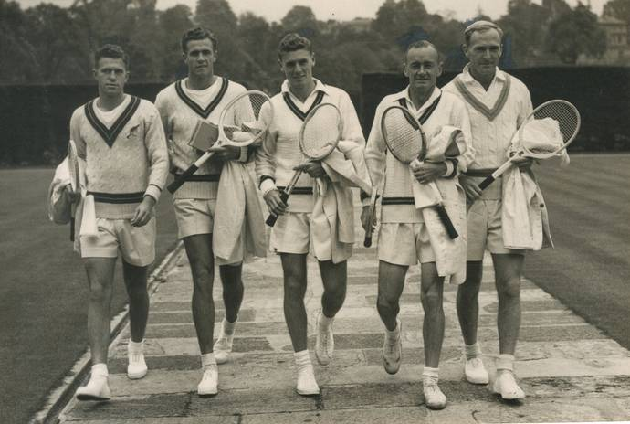
John Bromwich (extreme right), a two-handed Australian player in the 1930s and 1940s, had a deceptive serve return. - The Hindu Photo Library
What are the “I” and Australian formations? And when should you use them?
In the “I” formation, if you’re the net player, you crouch below the top of the net in the [normal] service box across from the returner. Then your partner basically serves over you, and you pop up and cover whichever side [right or left half of the court] you and he predetermined.
The Australian formation is where you stand more upright at the net and on the same side of the centre service line in the service box as the server. So he shouldn’t hit you in the back of the head because you’re on the same side.
In the pro game, the “I” formation is more effective. But when I’m coaching recreational tennis — where I’m wary of people with bad backs and bad knees — getting that low to the ground and having to pop up 50 times a match is not that easy for older people. So the Australian formation is a good alternative to the “I” formation.
The purpose of both formations is to stop the other team from returning cross court. Most players return cross court with far greater ease and consistency than they do down the line. So positioning the net player in the centre for either formation blocks off the cross-court return by and large, and makes the returner change their shot direction and go down the line.
What is the positional disadvantage of the lesser-used Australian formation?
The main disadvantage is that a skilful returner can shorten his return swing and block or poke the ball into the big open area down the line. That is the best way to defend against the Australian formation. He can take the ball early and possibly even follow it into the net to steal the net position, if the server stays back. That creates a difficult situation for the server if he stays at the baseline and is confronted with two players at the net. That exposes his partner [who is alone] at the net.
If you use the Australian formation, the net player shouldn’t always stay on the cross-court side. Sometimes they need to cut across and put away the down-the-line return in order to keep the returner guessing and off balance. The whole idea is that you never want the returner to know where your net man is going to end up [positioned].
So even recreational players who don’t have advanced skills, because they’re playing opponents who don’t have advanced skills either, should still use these formations because they can throw their opponents off their games?
Absolutely. My girlfriend plays 3.5-level tennis. I try and help her as best I can. I tell her to play Australian formation primarily from the ad side of the court when she’s serving to the ad side because most of the players at her level don’t have very good backhand volleys. And so on the ad side of the court, the returner is able to hit the ball cross court without any fear of the net player reaching over and putting away a backhand volley. Then they [the returning team] just steal the net position away from the server and win the point.
So I advise her, from the ad side of the court to put her partner in the Australian formation so we don’t let the returner get the ball cross court. That makes the returner hit the ball down the line, which on the ad side goes to the right-hander’s forehand, and the right-handed player forehand is normally the stronger shot. And then you get into these baseline rallies where at least the server has the forehand against the opponent’s backhand.
A good tactic to defend against that is to hit the return quickly down the line and advance to the net behind it and try to put the server under pressure.
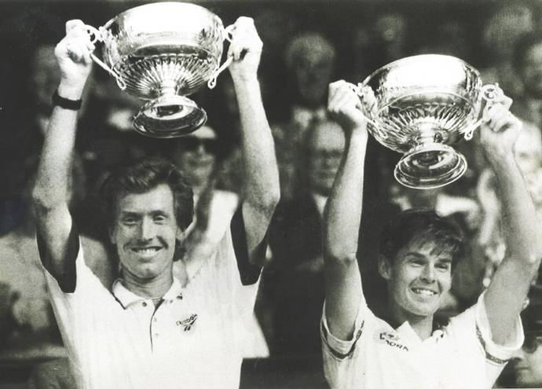
Even the great Australian team of the Woodies, Todd Woodbridge and Mark Woodforde, wasn’t anywhere near as active at net as Mike and Bob Bryan became. - The Hindu Photo Library
What are the main advantages of the “two-back” formation, where both players position themselves close to the baseline?
If you’re playing a team that’s poaching well and if you leave your returner’s partner at the net, then they’re an easy target for the poacher to volley the ball through. So it’s an excellent idea to put both players on the baseline when you’re both returning serve. That makes it more difficult for the poacher to end the point. This is an especially good tactic when you’re facing a big server or an effective poacher. Putting both the returner and the returner’s partner on the baseline is a high-percentage play because it gives you a chance to extend the point and make it more difficult for the other team to end points with a poach.
And in extreme situations, if you have a very weak serve and if your opponents have a very powerful return and they’re picking on the net player, then you can have your partner stand on the baseline as well. I’ve done that in World TeamTennis in the women’s doubles where one of my players had a very weak serve and one of her opponents had a very big forehand, and she was belting the ball straight through our net player. So it made more sense to have the net player play on the baseline as well.
In my era, Kent Carlsson ranked No. 6 in singles, but he was much weaker in doubles. So he played on the baseline when his partner served because his ground strokes were vastly superior to his volleys. It was very unorthodox, but it often worked. In doubles, you have to be flexible and imaginative. You play to your strengths, you target the weaknesses and tendencies of your opponents, and you are constantly throwing different tactics at your opponents to keep them in two minds about where to direct the ball. If you have either a massive forehand or exceptional lobs and poor range or technique at net, then it makes sense to play from the baseline, like Carlsson, as much as possible.
World-class players have a much better understanding of percentage tennis than lower-echelon players. What are the keys to playing percentage tennis in doubles?
Percentage tennis entails making as many first serves as possible. The Bryan boys try to make 70 percent or more of their first serves, which they accomplish a lot of the time. You should try to serve as accurately and powerfully as possible while maintaining that 70-percent level. That’s the trick. Anyone can get a cream puff serve in 70 percent of the time. But to serve with velocity and accuracy at 70 percent is truly great serving.
High-percentage returning also has a fine line. You want to return serve accurately and low and keep it away from the net player. You want to return as consistently as possible. But when you’re playing a team with good volleyers, you sometimes have to take more risks. Sometimes the higher-percentage play is to return serve with more aggression. Maybe they will result in a lower percentage of returns, but the returns you do make will win points [either outright or on the next shot]. And that will give you a chance for a service break.
So, high-percentage doubles can mean a lot of different things. Sometimes it’s doing a lot of poaching and taking away cross-court returns, which are many players’ favourite returns. High-percentage serving requires that you serve with slice and kick, rather than dead flat, to control the ball for consistency and accuracy.
You do need some spin to control your returns. But if there is a poaching threat from the net player, you do need to hit with as much penetration [power] as possible. So returning in doubles needs to be a little more high risk than returning in singles, where you don’t have a net player harassing you, so you can hit the ball with more margin [for error]. Specifically, in singles you can hit the ball higher over the net and position yourself deeper behind the baseline to give yourself more time to get the ball in play.
But in doubles, because you have a net man harassing you, you need to take the ball earlier and hit the ball cleaner and lower over the net to get it by the net player. Returning serve in doubles is one of the hardest things in tennis to do, especially in the men’s game. That’s why a lot of the doubles players beat singles players in doubles. The singles players get so used to returning high over the net or chipping the return and playing well behind the baseline and giving up ground. But when they play doubles, they have to change all that.
Some singles players adjust to that better than others. Rafa [Nadal] does a great job. When he plays doubles, he stands in much closer and rips the ball harder and flatter than he would in singles. He smart enough and flexible enough to do that, and he’s won an Olympic gold medal and Masters titles in doubles. Rafa and Roger [Federer] have skills, such as anticipating really well at net, that transfer really well to doubles.
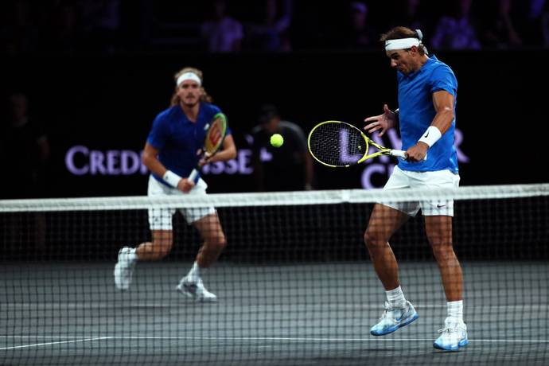
When Rafa Nadal plays doubles, he stands in much closer and rips the ball harder and flatter than he would in singles. - Getty Images
“Your doubles game should be filled with sabotage and surprise,” advises Marty Smith in his excellent instruction book, Absolute Tennis. What surprise tactics do you recommend?
That’s a great quote. That speaks to what I’m talking about — the net man doing damage, helping your partner hold serve and also cashing in when your partner hits good serve returns. A big part of that is surprising your opponents with your anticipation and your movement. Sabotage is also a good way to describe it because you’re breaking up the rhythm of your opponents who would like to just hit the ball high over the middle of the net and play a safe shot.
If you sabotage and surprise your opponents, you’re taking away that safe shot by stepping across, getting close to the net and putting the ball away. That forces your opponent to try to hit deep lobs or accurate shots in the alleys. These are tougher, lower-percentage shots.
Which elite doubles players had tricky, unpredictable or varied serve returns?
That’s a great question. John Bromwich, a two-handed Australian player in the 1930s and 1940s, had a deceptive serve return. The Woodies were consistent. Like the Bryans, they could hit effective lob returns. The one-dimensional doubles players don’t lob a lot on serve returns. Both of these teams could hit the push lob when their opponents were very close to the net.
What about clever, versatile doubles players in the women’s game?
Martina Hingis was a marvel. She was an absolute genius. She was a great example of someone with the ultimate shot variety. She could return the ball anywhere. She was especially deadly off the backhand. Her forehand was good in doubles, too. The two Martinas [Hingis and Navratilova] were the best volleyers in women’s tennis history. Hingis was a spectacular doubles player. She was clever and a master at deception. Her hands were gold. She and the other Martina were the benchmarks.
Bob and Mike Bryan, of course, learned a great deal and improved a lot when you coached them. What did you learn from coaching them for 11 years?
My gosh. They brought the best out of me. Their intensity and their professionalism and their desire and their ability to win in the clutch taught me a lot. I was a good player, not a great player, but working with them has made me a better coach.
Doubles is such a game of tactics and counter-tactics, and they helped me take that to the next level. I had to try to anticipate where their opponents were going to serve. For example, what percentage of the time would they serve down the middle to [left-hander] Bob’s forehand, and what percentage would they take him wide to the backhand? And when they take him wide to the backhand, would the net man cover the line, or would he cover the lob? How much would they poach on [right-hander] Mike’s backhand?
There is so much to try to anticipate about what their opponents would try to do to disrupt and sabotage the Bryans’ games. I make a game plan and talk about it with the guys. Then, once the match starts, it’s up to them to use that information and process it and sometimes adjust it if it’s not working perfectly.
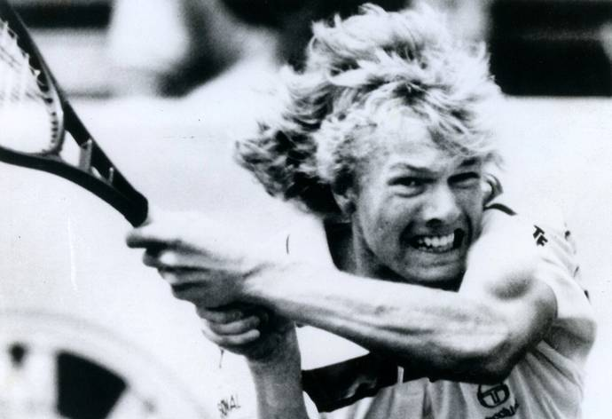
Kent Carlsson ranked No. 6 in singles, but he was much weaker in doubles. So he played on the baseline when his partner served because his ground strokes were vastly superior to his volleys. - The Hindu Photo Library
Do you use a lot of statistics to formulate your game plans?
I trust my eyes and my instincts a bit more because I watch a lot of tapes [videos] of previous match-ups involving other teams. I see what plays they went to on the big points. I do use some stats. The USTA tabulates a lot of stats now, so they help me with stats.
I didn’t have that for the bulk of my coaching career. But that changed in the last couple of years when I’ve coached John [Isner]. The USTA information tells me what percentage of the time a player serves to the forehand, the backhand, or the body, and all sorts of things.
I do use data more than I used to. In the old days, I’d just get out there in the stands and watch the Bryans’ opponents and make little notes to myself and then try to visualise and anticipate the match unfolding and what would be required to win.
Bob and Mike just turned 41. Do they have another major title in them?
I totally believe that. They just won the Masters tournament in Miami against all the other great teams. So they’re back to playing their best stuff. I have high hopes they can win many more Grand Slams.
Everyone likes to win, of course. But, unlike singles, doubles is typically very enjoyable whether you win or lose. What is it about doubles that makes it so much fun?
You have a comrade, a partner. You play with someone you like, and you enjoy that interaction out there. Singles is a lonely sport. You’re out there with no one to feed off or encourage you. Of course, if you’re playing doubles with someone you don’t get along with and you’re blaming each other and not feeding each other positive energy, it can be a miserable experience. But if you’re feeding each other good energy and enjoying the camaraderie and the communication and the teamwork, that makes it so much fun.
When doubles is played well, you see more entertaining points than in singles. You have four players having rapid exchanges. The Bryan brothers’ highlight reel of points are just spectacular. In the men’s game, when the serves get too big, the points can get a little too short. But there’s nothing more attractive and exciting in tennis than a well-played doubles match.
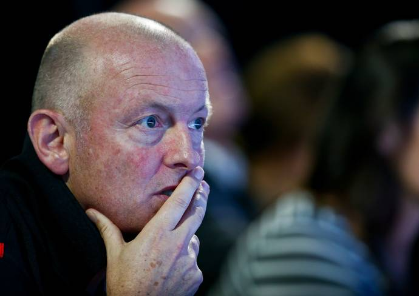
David Macpherson, affectionately nicknamed “Macca,” credits great chemistry for his extraordinary success with the Bryans. - Getty Images
David Macpherson is the most successful doubles coach in tennis history – he has worked with the Bryan brothers and was a consultant to Switzerland’s winning Davis Cup team at the 2014 final, which saw Roger Federer and Stan Wawrinka combine to take the doubles rubber. Here are his tips on ‘HOW TO HAVE SUCCESS AS A DOUBLES TEAM’ …
Source: tennisplayer.net archive — How you can play better doubles in tennis .docx (John Yandell teaching library, 2002-2022). Extracted and rendered as HTML for Tennis Future Lab.